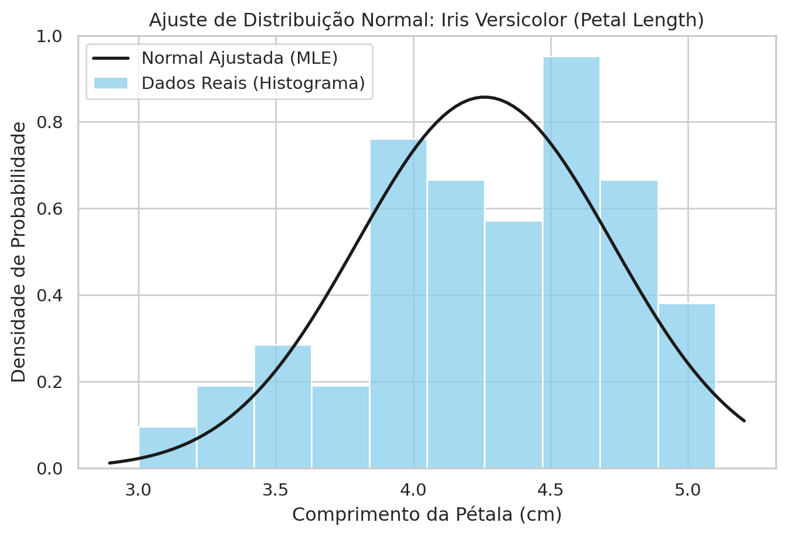
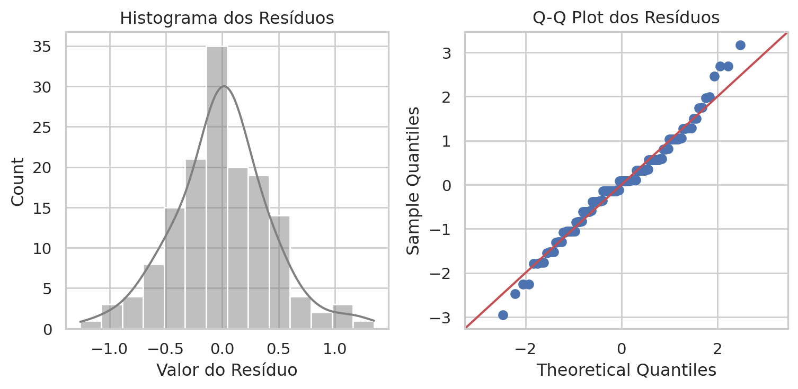
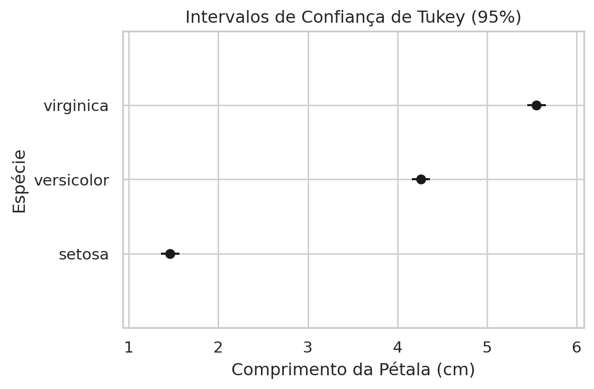
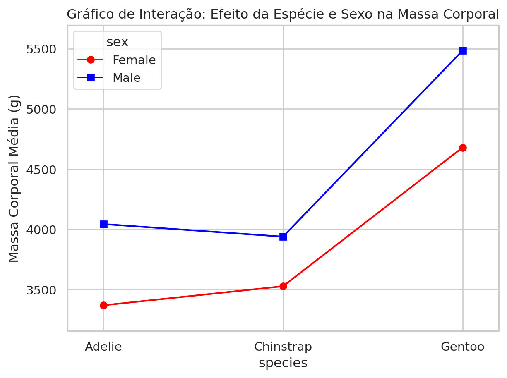

A jornada pelo universo da ciência de dados e da estatística computacional atinge, neste terceiro dia, um ponto de inflexão crítico. Até o momento, as ferramentas exploradas — manipulação de DataFrames, visualização de dados e estatística descritiva — serviram a um propósito fundamental, porém limitado: o de resumir e descrever o que já foi observado. A média de uma coluna em um dataset ou o histograma de uma variável são retratos do passado, fotografias estáticas de um conjunto finito de observações. No entanto, o verdadeiro poder da ciência reside não apenas em catalogar o que aconteceu, mas em generalizar essas observações para o desconhecido, prevendo comportamentos futuros ou inferindo propriedades de populações inteiras que jamais poderemos medir em sua totalidade. Este é o domínio da Inferência Estatística.
A inferência estatística é, em sua essência, uma ponte epistemológica construída sobre a matemática da probabilidade. Ela nos permite atravessar o abismo entre a amostra (o subconjunto de dados que possuímos, frequentemente imperfeito e limitado) e a população (a verdade universal subjacente que buscamos compreender). O processo não é isento de riscos; ao tentar dizer algo sobre o todo baseando-nos apenas em uma parte, aceitamos a inevitabilidade da incerteza. A estatística não elimina essa incerteza, mas fornece uma estrutura rigorosa para quantificá-la, gerenciá-la e utilizá-la como ferramenta de decisão.
2 A Matemática da Incerteza e a Distribuição Normal
Antes de podermos testar qualquer hipótese sobre o mundo, precisamos de uma linguagem para descrever a forma como os dados se dispersam aleatoriamente. Essa linguagem é dada pelas Distribuições de Probabilidade. Embora existam dezenas de distribuições teóricas para modelar desde o tempo de falha de componentes eletrônicos (Exponencial, Weibull) até contagens de eventos raros (Poisson), uma distribuição reina soberana na estatística clássica: a Distribuição Normal, ou Gaussiana.
2.1 A Onipresença da Curva de Sino (Gaussiana)
A centralidade da Distribuição Normal na estatística inferencial não é um acidente histórico, nem apenas uma conveniência matemática. Ela é fundamentada no Teorema Central do Limite (TCL). O TCL estabelece que, sob condições bastante gerais, a soma (ou a média) de um grande número de variáveis aleatórias independentes e identicamente distribuídas tenderá a seguir uma distribuição normal, independentemente da forma da distribuição original dessas variáveis. Isso significa que, mesmo que os dados individuais de uma população sejam estranhos, assimétricos ou complexos, as médias calculadas a partir de amostras dessa população se comportarão de maneira previsível, moldadas pela curva em sino.
Matematicamente, a Função Densidade de Probabilidade (PDF - Probability Density Function) de uma variável aleatória contínua \(X\) que segue uma distribuição normal é definida por dois parâmetros fundamentais: a média (\(\mu\)), que localiza o centro da distribuição, e o desvio padrão (\(\sigma\)), que determina sua dispersão ou largura. A fórmula elegante que descreve essa curva é:
Para compreender verdadeiramente o que o computador calcula quando pedimos o ajuste de uma normal, precisamos dissecar essa equação termo a termo:
O Fator de Normalização (\(\frac{1}{\sqrt{2\pi\sigma^2}}\)): A integral de qualquer função de densidade de probabilidade sobre todo o espaço real deve ser igual a \(1\) (100% de probabilidade). Sem esse termo constante, a área sob a exponencial seria \(\sqrt{2\pi\sigma^2}\). Ao dividirmos por esse valor, garantimos que a curva represente uma distribuição de probabilidade válida.
O Núcleo Exponencial (\(e^{ -\frac{(x-\mu)^2}{2\sigma^2} }\)): Este é o motor da distribuição. O termo \((x-\mu)^2\) no numerador do expoente representa a distância quadrática de um valor \(x\) em relação à média \(\mu\).
Como o expoente é negativo, quanto maior a distância \(|x-\mu|\), menor o valor da função. Isso cria o formato de sino, com o pico em \(\mu\) e caudas que decaem para zero em ambas as direções.
O termo \(2\sigma^2\) no denominador do expoente atua como um fator de escala. Se \(\sigma\) (desvio padrão) for grande, o denominador é grande, o que amortece o efeito da distância \((x-\mu)^2\). Isso faz com que a curva decaia mais lentamente, resultando em uma distribuição “gorda” e dispersa. Se \(\sigma\) for pequeno, o decaimento é rápido, gerando um pico agudo e estreito.
2.2 O Conceito de Máxima Verossimilhança (MLE)
Quando coletamos dados no mundo real, como o comprimento das pétalas de uma flor Iris versicolor, não recebemos junto o manual de instruções com os valores verdadeiros de \(\mu\) e \(\sigma\). Temos apenas os dados \(x_1, x_2,..., x_n\). Como escolhemos os “melhores” parâmetros para descrever esses dados? A resposta reside no método da Estimação de Máxima Verossimilhança (MLE - Maximum Likelihood Estimation).
A intuição do MLE é inverter a lógica probabilística padrão. Normalmente, dada uma distribuição (ex: Normal com média 0 e desvio 1), calculamos a probabilidade de observar um dado \(x\). No MLE, dado que já observamos os dados, perguntamos: “Qual distribuição (quais parâmetros \(\mu\) e \(\sigma\)) torna a observação desses dados específicos o evento mais provável possível?”.
Formalmente, para uma amostra de observações independentes, a função de Verossimilhança \(L(\theta)\) é o produto das densidades de probabilidade individuais:
Em termos computacionais, multiplicar muitas probabilidades (valores entre 0 e 1) resulta rapidamente em underflow numérico (o computador arredonda para zero). Por isso, algoritmos como os do scipy trabalham com o Log-Likelihood (\(\mathcal{L}\)), transformando o produtório em um somatório, que é matematicamente mais tratável e computacionalmente estável:
Note o denominador \(n\). Em cursos introdutórios de estatística, aprendemos exaustivamente a usar \(n-1\) para calcular a variância amostral. Por que o MLE usa \(n\)? O estimador MLE é, tecnicamente, enviesado (biased). Ele tende a subestimar a variância verdadeira da população porque utiliza a média amostral (\(\bar{x}\)) no cálculo, que se ajusta aos dados específicos da amostra melhor do que a média verdadeira da população (\(\mu\)) faria. Os dados estão sempre “mais próximos” da sua própria média amostral do que da média populacional real.
Para corrigir esse viés, utiliza-se a Correção de Bessel, trocando \(n\) por \(n-1\). Isso é fundamental em amostras pequenas. Bibliotecas focadas em análise de dados como o pandas aplicam a correção de Bessel por padrão (ddof=1), enquanto bibliotecas focadas em ajuste probabilístico puro como o scipy.stats aplicam o MLE estrito (ddof=0 ou denominador \(n\)).
2.3 Implementação Computacional e Análise de Código: Ajuste de Distribuições
Vamos concretizar essa teoria analisando o comprimento das pétalas da espécie Iris Versicolor utilizando Python. O objetivo é duplo: visualizar a distribuição empírica e ajustar uma curva teórica Normal usando MLE.
Carregamento e Preparação dos Dados:
Código
import numpy as npimport pandas as pdimport scipy.stats as statsimport matplotlib.pyplot as pltimport seaborn as sns# Configuração estética dos gráficossns.set_theme(style="whitegrid")# Carregamento do dataset Iris embutido no Seaborndf_iris = sns.load_dataset('iris')# Filtragem: Selecionando apenas a espécie Versicolor e a variável petal_lengthdata_versicolor = df_iris[df_iris['species'] =='versicolor']['petal_length']# Visualização inicial das primeiras linhasprint("Amostra dos dados (Versicolor - Petal Length):")print(data_versicolor.head())
O código a seguir utiliza a função stats.norm.fit. É importante entender o que esta função executa nos bastidores. Ela não está “adivinhando”; ela está executando a otimização dos parâmetros da Equação da Verossimilhança discutida acima.
Código
# Passo 1: Ajuste de Máxima Verossimilhança# A função fit() retorna uma tupla (loc, scale)# Para a normal: loc = média, scale = desvio padrãomu_mle, std_mle = stats.norm.fit(data_versicolor)print(f"\n--- Parâmetros Estimados via MLE (scipy) ---")print(f"Média (mu): {mu_mle:.4f}")print(f"Desvio Padrão (sigma): {std_mle:.4f}")print(f"Nota: O scipy usa denominador 'n' (enviesado) para o desvio padrão.")# Passo 2: Comparação com Estatística Descritiva Padrão (Pandas)mean_pandas = data_versicolor.mean()std_pandas = data_versicolor.std() # Padrão do pandas é ddof=1print(f"\n--- Parâmetros Estimados via Pandas (Bessel's Correction) ---")print(f"Média: {mean_pandas:.4f}")print(f"Desvio Padrão: {std_pandas:.4f}")print(f"Nota: O pandas usa denominador 'n-1' (não-enviesado).")# Cálculo manual da diferença para evidenciar a matemátican =len(data_versicolor)diferenca_std = std_pandas - std_mleprint(f"\nDiferença nos Desvios Padrões (n-1 vs n): {diferenca_std:.4f}")
--- Parâmetros Estimados via MLE (scipy) ---
Média (mu): 4.2600
Desvio Padrão (sigma): 0.4652
Nota: O scipy usa denominador 'n' (enviesado) para o desvio padrão.
--- Parâmetros Estimados via Pandas (Bessel's Correction) ---
Média: 4.2600
Desvio Padrão: 0.4699
Nota: O pandas usa denominador 'n-1' (não-enviesado).
Diferença nos Desvios Padrões (n-1 vs n): 0.0047
Análise das Saídas e Implicações: Ao executar este código, observaremos que as médias (mu_mle e mean_pandas) são idênticas. O estimador da média no MLE é não-enviesado. Contudo, os desvios padrões divergirão.
O std_mle será ligeiramente menor. Isso confirma que o MLE subestima a dispersão.
O std_pandas será maior, pois dividir por \(n-1\) (49, no caso de \(n=50\) observações da Versicolor) resulta em um valor maior do que dividir por \(n\) (50).
Visualização Gráfica da Aderência:
Para validar se a suposição de normalidade faz sentido, sobrepomos a curva teórica (gerada com os parâmetros MLE) ao histograma dos dados reais.
Código
# Criando a figuraplt.figure(figsize=(8, 5))# 1. Histograma dos dados reais (densidade)sns.histplot(data_versicolor, kde=False, stat="density", color="skyblue", label="Dados Reais (Histograma)", bins=10)# 2. Gerando a curva teórica Normal# Criamos um eixo x fictício variando entre min e max dos dadosxmin, xmax = plt.xlim()x_axis = np.linspace(xmin, xmax, 100)# Calculamos a PDF teórica para cada ponto x usando os parâmetros mu e std do MLEp_axis = stats.norm.pdf(x_axis, mu_mle, std_mle)# Plotando a curvaplt.plot(x_axis, p_axis, 'k', linewidth=2, label='Normal Ajustada (MLE)')plt.title('Ajuste de Distribuição Normal: Iris Versicolor (Petal Length)')plt.xlabel('Comprimento da Pétala (cm)')plt.ylabel('Densidade de Probabilidade')plt.legend()plt.show()

Neste gráfico, a linha preta representa o modelo idealizado. As barras azuis são a realidade ruidosa. A “bondade do ajuste” (goodness-of-fit) pode ser avaliada visualmente (a curva segue a forma das barras?) ou por testes estatísticos que veremos adiante (Shapiro-Wilk).
3 A Filosofia e Mecânica dos Testes de Hipótese
Uma vez que conseguimos descrever os dados através de parâmetros de distribuições, podemos avançar para a Tomada de Decisão. A ciência raramente se contenta em dizer “a média é 4.2”. Ela pergunta: “A média é 4.2 por acaso, ou isso reflete um efeito real do tratamento?”. Entramos no território dos Testes de Hipótese.
3.1 O Paradigma Frequentista e a Analogia do Tribunal
A estrutura lógica do teste de hipótese frequentista (Neyman-Pearson/Fisher) é, muitas vezes, contra-intuitiva. Ela opera por contradição. Não provamos que algo é verdadeiro; tentamos mostrar que a alternativa é implausível. A melhor analogia pedagógica para entender esse processo é o Julgamento Criminal.
A Hipótese Nula (\(H_0\)) = A Presunção de Inocência: Ao iniciar um julgamento, o réu é considerado inocente. Não importa o quão suspeito ele pareça, o estado inicial do sistema é “nada aconteceu”, “não há crime”, “não há diferença entre os grupos”. O ônus da prova recai sobre a acusação. Na estatística, \(H_0\) postula que qualquer diferença observada nos dados é mero fruto do acaso (ruído amostral).
Os Dados = A Evidência: Coletamos evidências (amostras). Calculamos uma estatística de teste (como um valor \(t\) ou \(F\)), que resume a força dessa evidência contra a inocência do réu.
O Valor-p (P-value) = O Nível de Surpresa: Esta é a parte mais mal compreendida. O p-valor responde à seguinte pergunta condicional: “Se o réu fosse realmente inocente (\(H_0\) verdadeira), qual seria a probabilidade de encontrarmos uma evidência tão incriminatória (ou mais) quanto esta, puramente por coincidência?”.
P-valor alto (ex: 0.30): Significa que a evidência é comum. Se o réu for inocente, evidências assim aparecem 30% das vezes. Não há surpresa. O veredito é “Inocente” (falhamos em rejeitar \(H_0\)).
P-valor baixo (ex: 0.001): É altamente improvável. Se o réu fosse inocente, uma evidência dessa magnitude surgiria apenas 1 vez em 1000 julgamentos. Isso é suspeito demais. A “surpresa” é tão grande que abandonamos a crença na inocência. O veredito é “Culpado” (rejeitamos \(H_0\)).
Importante: O p-valor NÃO é a probabilidade de o réu ser inocente. É a probabilidade da evidência, dada a inocência. \(P(Dados | H_0) \neq P(H_0 | Dados)\).
3.2 O Limiar de Decisão: Nível de Significância (\(\alpha\))
Para emitir um veredito, precisamos de um padrão de prova. Em um tribunal civil, pode ser “preponderância da evidência”. Em um criminal, é “além de qualquer dúvida razoável”. Na estatística, definimos esse padrão a priori como o Nível de Significância (\(\alpha\)), tipicamente 0.05 (5%).
O \(\alpha\) é o risco máximo que aceitamos correr de condenar um inocente (Erro Tipo I).
Se \(p\text{-valor} < \alpha\), consideramos o resultado “estatisticamente significativo”.
3.3 Comparação de Duas Médias: O Teste t de Student
O teste mais fundamental da inferência é a comparação de dois grupos. Para isso, utilizamos o Teste t, desenvolvido por William Gosset. Gosset trabalhava na cervejaria Guinness e lidava com pequenas amostras de cevada. Ele percebeu que, ao usar o desvio padrão da amostra (\(s\)) em vez do populacional (\(\sigma\)) para calcular o erro padrão, a distribuição das médias não era perfeitamente Normal, mas tinha caudas mais “pesadas” (mais incerteza). Essa nova distribuição foi batizada de t de Student.
A estatística t é, essencialmente, uma medida de sinal-ruído:
\[t = \frac{\text{Diferença entre Médias (Sinal)}}{\text{Variabilidade dos Dados (Ruído)}} = \frac{\bar{x}_1 - \bar{x}_2}{\sqrt{\frac{s_1^2}{n_1} + \frac{s_2^2}{n_2}}}\]
O Problema das Variâncias Desiguais (Teste t de Welch)
A fórmula acima (t de Student clássico) assume que as variâncias dos dois grupos são idênticas (Homocedasticidade). Mas e se compararmos a massa corporal de pinguins machos e fêmeas, e a variabilidade dos machos for muito maior? O teste clássico falha, aumentando o erro Tipo I.
A solução moderna é o Teste t de Welch. Ele não assume variâncias iguais. Ele ajusta os Graus de Liberdade (\(df\)) usando a equação de Welch-Satterthwaite, resultando frequentemente em um número fracionário de graus de liberdade. Na prática estatística contemporânea com Python, recomenda-se usar o teste de Welch por padrão, a menos que haja uma forte razão teórica para assumir variâncias iguais.
Estudo de Caso com Python: Dimorfismo Sexual em Pinguins
Vamos investigar se há uma diferença significativa na massa corporal (body_mass_g) entre pinguins machos e fêmeas da espécie Gentoo.
Hipóteses:
\(H_0: \mu_{machos} = \mu_{fêmeas}\) (As médias são iguais).
from scipy.stats import ttest_ind# Carregamento do dataset Penguinsdf_penguins = sns.load_dataset('penguins')# Filtragem de dados: Selecionando espécie Gentoogentoo_data = df_penguins[df_penguins['species'] =='Gentoo']# Separação dos grupos e limpeza de NaNs (passo crucial)# O ttest falhará se houver dados faltantesmass_males = gentoo_data[gentoo_data['sex'] =='Male']['body_mass_g'].dropna()mass_females = gentoo_data[gentoo_data['sex'] =='Female']['body_mass_g'].dropna()print(f"Tamanho da amostra (Machos): {len(mass_males)}")print(f"Tamanho da amostra (Fêmeas): {len(mass_females)}")# Execução do Teste t de Welch# O parâmetro equal_var=False ativa a correção de Welch para variâncias desiguaist_stat, p_val = ttest_ind(mass_males, mass_females, equal_var=False)print("\n--- Resultados do Teste t de Welch ---")print(f"Estatística t: {t_stat:.4f}")print(f"Valor-p: {p_val:.20f}") # Formatação para revelar a magnitude real# Decisão baseada em alpha = 0.05alpha =0.05if p_val < alpha:print("\nDecisão: Rejeitar a Hipótese Nula (H0).")print("Há evidência estatística de diferença de massa entre os sexos.")else:print("\nDecisão: Falha em rejeitar H0. Não há evidência suficiente.")
Tamanho da amostra (Machos): 61
Tamanho da amostra (Fêmeas): 58
--- Resultados do Teste t de Welch ---
Estatística t: 14.7614
Valor-p: 0.00000000000000000000
Decisão: Rejeitar a Hipótese Nula (H0).
Há evidência estatística de diferença de massa entre os sexos.
Interpretação dos Resultados: Ao rodar este código, é provável que você encontre um valor-p na ordem de \(10^{-20}\) ou menor.
Estatística t positiva (ex: 14.7): O numerador da fórmula (\(\bar{x}_{macho} - \bar{x}_{fêmea}\)) foi positivo, indicando que a média dos machos é substancialmente maior.
Valor-p minúsculo: A probabilidade de observar uma diferença de massa tão grande (ou maior) puramente por acaso, se machos e fêmeas tivessem a mesma média populacional, é virtualmente zero.
Conclusão Biológica: Existe um dimorfismo sexual significativo em pinguins Gentoo, com machos sendo mais pesados.
4 Análise de Variância (ANOVA)
E se quisermos comparar três grupos? Por exemplo, o comprimento da pétala entre as espécies Setosa, Versicolor e Virginica.
A intuição inicial seria fazer três testes t: (Setosa vs Versicolor), (Versicolor vs Virginica), (Setosa vs Virginica).Por que isso é errado?Cada teste t carrega um risco de 5% (\(\alpha=0.05\)) de erro Tipo I (falso positivo). Ao realizarmos múltiplos testes independentes, esses riscos se acumulam. Para 3 testes, a probabilidade de cometer pelo menos um erro sobe para \(1 - (0.95)^3 \approx 14.3\%\). Isso é chamado de Inflação do Erro Familiar.
A solução é a ANOVA (Analysis of Variance). A ANOVA permite testar globalmente se alguma das médias difere, mantendo o \(\alpha\) controlado em 5%, independentemente do número de grupos.
4.1 A Lógica da Decomposição da Variância
O nome “Análise de Variância” pode parecer paradoxal quando estamos interessados em médias. No entanto, a ANOVA opera comparando duas fontes de variação nos dados:
Variação Entre Grupos (Between-Group Variance): Mede o quanto as médias de cada grupo (\(\bar{x}_j\)) se afastam da média global de todos os dados (\(\bar{x}_{..}\)). Se os grupos forem muito diferentes (ex: Setosa tem pétalas minúsculas e Virginica enormes), essa variação será alta. Este é o nosso SINAL (o efeito da espécie).
Variação Dentro dos Grupos (Within-Group Variance): Mede o quanto cada observação individual (\(x_{ij}\)) varia em relação à média do seu próprio grupo (\(\bar{x}_j\)). Isso representa a variabilidade natural, diferenças genéticas individuais, erro de medição. Este é o nosso RUÍDO.
A Estatística F é, portanto, a razão Sinal/Ruído, ponderada pelos graus de liberdade:
\[F = \frac{\text{Quadrado Médio Entre (MS}_B)}{\text{Quadrado Médio Dentro (MS}_W)} = \frac{SS_{Between} / (k-1)}{SS_{Within} / (N-k)}\]
Se \(F\) for significativamente maior que 1, a variação provocada pelo “tratamento” (Espécie) é maior do que a variação aleatória. Isso sugere que as espécies são distintas.
4.2 Executando One-Way ANOVA com statsmodels
Vamos utilizar o dataset Iris. Optaremos pela biblioteca statsmodels em vez de scipy porque ela gera a Tabela ANOVA clássica, que detalha a decomposição da variância, fundamental para uma análise profissional.
A Sintaxe de Fórmula do Statsmodels: O statsmodels adota uma sintaxe inspirada na linguagem R, o que facilita a definição de modelos. A string 'petal_length ~ C(species)' deve ser lida como: “Modele a variável petal_length em função da variável categórica species”. O C() força a interpretação da variável como categórica, embora para strings o pandas já faça isso automaticamente.
Código
import statsmodels.api as smfrom statsmodels.formula.api import ols# Passo 1: Definição e Ajuste do Modelo OLS (Ordinary Least Squares)model_anova = ols('petal_length ~ C(species)', data=df_iris).fit()# Passo 2: Geração da Tabela ANOVA# typ=2 refere-se ao Tipo II Sum of Squares (veremos a seguir)anova_table = sm.stats.anova_lm(model_anova, typ=2)print("--- Tabela ANOVA: Comprimento da Pétala por Espécie ---")print(anova_table)
--- Tabela ANOVA: Comprimento da Pétala por Espécie ---
sum_sq df F PR(>F)
C(species) 437.1028 2.0 1180.161182 2.856777e-91
Residual 27.2226 147.0 NaN NaN
Interpretação da Tabela de Saída:
A saída será uma tabela (DataFrame) contendo colunas cruciais. Vamos analisar uma saída típica para este dataset:
Fonte
sum_sq
df
F
PR(>F)
C(species)
437.10
2.0
1180.16
2.85e-91
Residual
27.22
147.0
NaN
NaN
df (Degrees of Freedom):
C(species):\(k-1 = 3-1 = 2\). Temos 3 espécies, logo 2 graus de liberdade para o efeito. (Imagine que se você sabe a média global e as médias de 2 espécies, a terceira é fixada; por isso perde-se 1 grau de liberdade).
Residual:\(N - k = 150 - 3 = 147\). São os graus de liberdade restantes para estimar o erro.
sum_sq (Soma dos Quadrados):
A variação explicada pelas espécies (437.10) é massivamente maior que a variação residual (27.22). Isso já é um forte indício de efeito.
F (Estatística F): O valor 1180.16 significa que o sinal é mais de mil vezes mais forte que o ruído de fundo.
PR(>F): O valor-p é \(2.85 \times 10^{-91}\). Este número é tão absurdamente pequeno que podemos afirmar com certeza quase absoluta: as médias de comprimento de pétala não são iguais entre as espécies. Rejeitamos \(H_0\).
Nota sobre typ=2 (Soma de Quadrados Tipo II): O argumento typ define como a variância é calculada em designs desbalanceados ou com múltiplos fatores.
Tipo I (Sequencial): A ordem das variáveis importa. A variância é atribuída ao primeiro fator, depois o que sobra ao segundo. Perigoso em dados desbalanceados.
Tipo II (Parcial/Hierárquico): Calcula o efeito de um fator assumindo que todos os outros fatores principais estão no modelo, mas ignora interações. É o padrão recomendado para testes de efeitos principais quando não há interações significativas.
Tipo III (Marginal): Necessário quando há interações, mas exige codificação de contrastes ortogonais para ser válido. Para uma One-Way ANOVA (só um fator), os resultados são idênticos, mas usar typ=2 cria um hábito robusto para modelos futuros mais complexos.
5 Diagnóstico do Modelo e a Análise de Resíduos
Um dos erros mais graves e comuns em análises estatísticas é testar as premissas (como normalidade) nos dados brutos.
Atenção: A ANOVA não exige que a variável resposta (petal_length) seja normal globalmente. Ela exige que os RESÍDUOS (a parte do erro, \(\epsilon\)) sejam normais dentro de cada grupo.
Se plotarmos o histograma de petal_length de todas as íris juntas, veremos uma distribuição bimodal ou trimodal (vários picos). Isso não invalida a ANOVA. O que deve ser normal é o que “sobra” depois que subtraímos a média de cada espécie dos seus dados.
5.1 Extração e Teste Visual dos Resíduos
O objeto model_anova que criamos anteriormente armazena os resíduos no atributo .resid.
Código
# Acessando os resíduos do modeloresiduals = model_anova.resid# Configurando plotagem lado a ladofig, ax = plt.subplots(1, 2, figsize=(8, 4))# 1. Histograma dos Resíduossns.histplot(residuals, kde=True, ax=ax[0], color='gray')ax[0].set_title("Histograma dos Resíduos")ax[0].set_xlabel("Valor do Resíduo")# 2. Q-Q Plot (Quantile-Quantile Plot)# Compara os quantis dos resíduos com os quantis teóricos de uma Normalsm.qqplot(residuals, line='45', fit=True, ax=ax[1])ax[1].set_title("Q-Q Plot dos Resíduos")plt.tight_layout()plt.show()

Interpretação do Q-Q Plot: O Q-Q plot é a ferramenta de diagnóstico mais poderosa. No eixo X temos onde os dados deveriam estar se fossem perfeitamente normais. No eixo Y, onde eles realmente estão.
Se os pontos azuis caírem exatamente sobre a linha vermelha de 45 graus, a normalidade é perfeita.
Se os pontos nas pontas se curvarem para fora da linha, isso indica “caudas pesadas” (outliers ou curtose excessiva).
Se os pontos formarem um “S”, a distribuição pode ser assimétrica. No caso do dataset Iris, é comum observar leves desvios nas pontas, mas se a massa central dos dados segue a linha, a ANOVA geralmente é robusta o suficiente para manter sua validade.
5.2 Testes Formais: Shapiro-Wilk e Homocedasticidade
Além da inspeção visual, aplicamos testes estatísticos formais.
Shapiro-Wilk: Testa a normalidade dos resíduos. (\(H_0\): Resíduos são normais).
Levene: Testa a homogeneidade das variâncias (Homocedasticidade) entre os grupos. É preferível ao teste de Bartlett quando os dados não são perfeitamente normais. (\(H_0\): Variâncias são iguais).
Código
# Teste de Normalidade nos Resíduosshapiro_stat, shapiro_p = stats.shapiro(residuals)print(f"Teste Shapiro-Wilk: W={shapiro_stat:.4f}, p={shapiro_p:.4f}")# Teste de Homogeneidade de Variância (Levene)# Precisamos passar os grupos separadamentesetosa = df_iris[df_iris['species']=='setosa']['petal_length']versicolor = df_iris[df_iris['species']=='versicolor']['petal_length']virginica = df_iris[df_iris['species']=='virginica']['petal_length']levene_stat, levene_p = stats.levene(setosa, versicolor, virginica)print(f"Teste de Levene: W={levene_stat:.4f}, p={levene_p:.4f}")
Teste Shapiro-Wilk: W=0.9811, p=0.0368
Teste de Levene: W=19.4803, p=0.0000
Decisão e Remediação:
Se Shapiro-Wilk tiver \(p < 0.05\), a normalidade é violada. Porém, com \(N=150\), a ANOVA é robusta devido ao Teorema Central do Limite.
Se Levene tiver \(p < 0.05\), a suposição de variâncias iguais é violada (Heterocedasticidade). Isso é mais grave.30 No dataset Iris, é comum que a variância das pétalas varie entre espécies. Se a violação for severa, deve-se considerar a ANOVA de Welch (disponível na biblioteca pingouin como pingouin.welch_anova) ou transformações de dados (Log, Raiz Quadrada).
6 Post-Hoc Analysis (Tukey HSD)
A ANOVA nos informou que existe uma diferença entre as espécies (\(p \approx 0\)). Mas onde? Será que Setosa é diferente de Versicolor? Versicolor de Virginica? A ANOVA é um teste “Omnibus” (global). Para investigar os pares específicos, precisamos de testes Post-Hoc.
Não podemos simplesmente rodar múltiplos testes t agora, pelo mesmo motivo da inflação de erro discutida antes. Precisamos de um teste que corrija o valor-p para múltiplas comparações. O padrão-ouro para comparações par-a-par quando as variâncias são iguais é o Teste de Tukey HSD (Honest Significant Difference).
O Tukey HSD calcula uma estatística \(q\) (Studentized Range Statistic) baseada na diferença entre a maior e a menor média, ajustada pelo erro padrão. Ele constrói intervalos de confiança simultâneos para todas as diferenças.
6.1 Execução com statsmodels
Código
from statsmodels.stats.multicomp import pairwise_tukeyhsd# O Tukey exige os dados empilhados (endog) e os identificadores de grupotukey = pairwise_tukeyhsd(endog=df_iris['petal_length'], groups=df_iris['species'], alpha=0.05)print("--- Resultados do Teste de Tukey HSD ---")print(tukey)
--- Resultados do Teste de Tukey HSD ---
Multiple Comparison of Means - Tukey HSD, FWER=0.05
=========================================================
group1 group2 meandiff p-adj lower upper reject
---------------------------------------------------------
setosa versicolor 2.798 0.0 2.5942 3.0018 True
setosa virginica 4.09 0.0 3.8862 4.2938 True
versicolor virginica 1.292 0.0 1.0882 1.4958 True
---------------------------------------------------------
6.2 Interpretação Detalhada da Matriz de Decisão
A saída do pairwise_tukeyhsd é rica em informações. Vamos analisar uma saída hipotética típica para estes dados:
6.2.1 Resultados do Teste de Tukey HSD
Multiple Comparison of Means – Tukey HSD (FWER = 0.05)
group1
group2
meandiff
p-adj
lower
upper
reject
setosa
versicolor
2.798
0.000
2.5942
3.0018
Sim
setosa
virginica
4.090
0.000
3.8862
4.2938
Sim
versicolor
virginica
1.292
0.000
1.0882
1.4958
Sim
meandiff: A diferença simples entre as médias (\(\mu_{group2} - \mu_{group1}\)). Ex: Versicolor tem pétalas, em média, 2.798 cm maiores que Setosa.
p-adj: O valor-p corrigido. Se fosse um teste t simples, esse valor seria ainda menor, mas o Tukey “penaliza” a significância para evitar falsos positivos.
lower / upper: O Intervalo de Confiança de 95% para a diferença real.
Se o intervalo não contiver o zero (ex: vai de 2.59 a 3.00, ambos positivos), temos certeza estatística de que a diferença existe. Se o intervalo fosse de -0.5 a +0.5, o zero (nenhuma diferença) seria uma possibilidade plausível.
reject: A conclusão final. True significa “Rejeitar \(H_0\) de que as médias são iguais”. Neste caso, todas as espécies são diferentes entre si.
6.3 Visualização dos Intervalos
Uma imagem vale por mil tabelas. O método plot_simultaneous desenha os intervalos de confiança das médias. Grupos cujos intervalos não se sobrepõem (considerando as barras de erro projetadas) são estatisticamente diferentes.
Código
fig = tukey.plot_simultaneous( xlabel="Comprimento da Pétala (cm)", ylabel="Espécie")# Ajustando o tamanho da figurafig.figure.set_size_inches(6, 4)plt.title("Intervalos de Confiança de Tukey (95%)")plt.tight_layout()plt.show()

7 Two-Way ANOVA e o Conceito de Interação
O mundo raramente é explicado por apenas uma causa. Frequentemente, múltiplos fatores atuam simultaneamente sobre uma variável resposta. Mais interessante ainda, esses fatores podem interagir.
O que é Interação? Uma interação ocorre quando o efeito de um fator depende do nível de outro fator.
Exemplo sem interação: Pinguins machos são 500g mais pesados que fêmeas em todas as espécies.
Exemplo com interação: Pinguins machos são 200g mais pesados na espécie Adelie, mas 1000g mais pesados na espécie Gentoo. Aqui, o “efeito do sexo” depende da “espécie”.
Para modelar isso, usamos a Two-Way ANOVA (ANOVA de Duas Vias). Voltaremos ao dataset Penguins para examinar como body_mass_g é afetado por species e sex.
7.1 Modelagem Matemática da Interação
O modelo linear se expande para incluir termos extras:
O termo \((\alpha\beta)_{ij}\) captura a “diferença da diferença”.
7.2 Implementação em Python
Na fórmula do statsmodels, o símbolo * (asterisco) indica “multiplicação de fatores”, ou seja, inclui os efeitos principais E a interação. Se usássemos +, teríamos apenas os efeitos principais (modelo aditivo).
Código
# Carregando dataset penguins e removendo NaNs relevantesdf_penguins_clean = df_penguins.dropna(subset=['body_mass_g', 'species', 'sex'])# Ajustando o modelo com interação# 'body_mass_g ~ C(species) * C(sex)' expande para:# species + sex + species:sexmodel_2way = ols('body_mass_g ~ C(species) * C(sex)', data=df_penguins_clean).fit()# Tabela ANOVA (Tipo II é adequado aqui)anova_2way = sm.stats.anova_lm(model_2way, typ=2)print("--- Two-Way ANOVA: Massa Corporal ~ Espécie * Sexo ---")print(anova_2way)
--- Two-Way ANOVA: Massa Corporal ~ Espécie * Sexo ---
sum_sq df F PR(>F)
C(species) 1.434016e+08 2.0 749.015666 8.144406e-123
C(sex) 3.709026e+07 1.0 387.459976 1.902273e-57
C(species):C(sex) 1.676557e+06 2.0 8.756997 1.973489e-04
Residual 3.130263e+07 327.0 NaN NaN
Análise da Tabela Resultante: Você verá uma linha extra: C(species):C(sex).
C(species): Testa se as espécies têm massas diferentes (ignorando sexo). Provavelmente significativo.
C(sex): Testa se sexos têm massas diferentes (ignorando espécie). Provavelmente significativo.
C(species):C(sex): Testa a interação.
Se PR(>F) < 0.05, a interação é significativa. Isso muda tudo. Não podemos mais dizer simplesmente “Machos são maiores”. Temos que dizer “Machos são maiores, mas a magnitude dessa diferença varia conforme a espécie”.
7.3 Visualizando Interações: O “Interaction Plot”
A melhor forma de comunicar uma interação é visualmente. Usaremos a função interaction_plot do statsmodels ou um pointplot do seaborn. Se as linhas que conectam as médias forem paralelas, não há interação. Se elas divergirem ou se cruzarem (“Cross-over interaction”), a interação é forte.
Código
from statsmodels.graphics.factorplots import interaction_plot# Criando gráfico de interaçãofig = interaction_plot(x=df_penguins_clean['species'], trace=df_penguins_clean['sex'], response=df_penguins_clean['body_mass_g'], colors=['red', 'blue'], markers=['o', 's'])plt.title("Gráfico de Interação: Efeito da Espécie e Sexo na Massa Corporal")plt.ylabel("Massa Corporal Média (g)")plt.show()

Neste gráfico, se observarmos que a distância vertical entre a linha vermelha (Fêmeas) e azul (Machos) é muito maior na categoria “Gentoo” do que nas outras, isso visualiza a interação significativa que a tabela ANOVA detectou. Isso sugere que o dimorfismo sexual é evolutivamente mais pronunciado nos pinguins Gentoo.
8 Conclusão
Neste terceiro dia, cruzamos a fronteira crítica da ciência de dados. Deixamos de ser meros contadores de histórias do passado (estatística descritiva) para nos tornarmos investigadores do desconhecido (inferência).
Dominamos a Distribuição Normal e o método MLE, compreendendo as sutilezas do viés nos estimadores de variância. Aplicamos o Teste t de Welch, reconhecendo que a suposição de variâncias iguais é frequentemente irrealista. Escalamos nossa análise para a ANOVA, aprendendo a decompor a variância em Sinal e Ruído, e a diagnosticar a saúde do modelo através dos Resíduos. Finalmente, refinamos nossas conclusões com testes Post-Hoc (Tukey) e modelamos a complexidade do mundo real através de Interações.
A estatística computacional com Python nos dá o poder de processar gigabytes de dados em milissegundos, mas é o entendimento filosófico e matemático detalhado aqui — o significado de um p-valor, a natureza de um grau de liberdade, a geometria da soma dos quadrados — que impede que transformemos esse poder em conclusões equivocadas. Lembre-se sempre: o código roda o modelo, mas é você quem valida a verdade.
Uso de Inteligência Artificial: Material com exemplos criados com gemini e revisado pelo autor.